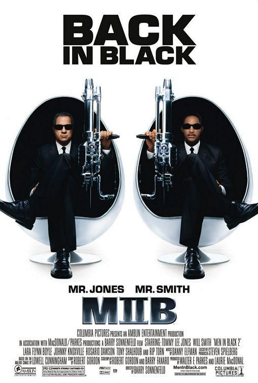

Segunda película
Segunda película("Men In Black II")

Sinopsis
Han pasado cuatro años desde que J y K evitaran un rescate intergaláctico. Desde entonces, K ha regresado a la vida civil y J continúa con su trabajo. Sin embargo, deben volver a trabajar juntos cuando descubren un diabólico plan dirigido por Serleena, un verdadero monstruo que se hace pasar por una atractiva modelo.
Fecha de estreno: 03 de Julio 2003
Duración: 90 min
Música compuesta por: Danny Elfman
Guion: Robert Gordon, Barry Fanaro
Dirección: Barry Sonnenfeld
Productores: Barry Sonnenfeld, Laurie MacDonald, Walter F. Parkes
Historia escrita por: Lowell Cunningham, Robert Gordon
| Intérpretes |
| Personajes |
Actores |
Actor de voz (Hispanoamérica) |
| Agente K |
Tommy Lee Jones |
Blas García |
| Agente J / James Darrell Edwards III |
Will Smith |
Juan Alfonso Carralero |
| Serleena |
Lara Flynn Boyle |
Sarah Souza |
| Laura Vásquez |
Rosario Dawson |
Yolanda Vidal |
| Rip Torn |
Agent Zed |
Jorge Fink |
| Agente G |
Sid Hilman |
Roberto Mendiola
|
| Agente M |
Michael Jackson |
Eduardo Garza |
| Agente T |
Patrick Warburton |
Arturo Mercado Jr. |
| Frank El Perro |
Tim Blaney |
Yamil Atala |
| Scrad & Charlie |
Johnny Knoxville |
Sergio Gutiérrez Coto |
| Jack Jeebs |
Tony Shalhoub |
Martín Soto |
| Newton |
David Cross |
Daniel Abundis |
| Ben el sartiano |
Jack Kehler |
Arturo Mercado |
| Jarra |
John Alexander |
Humberto Solórzano |
| Peter Graves |
Peter Graves |
Rubén Moya |
| Hailey |
Colombe Jacobsen-Derstine |
Elsa Covián |
| Neeble |
Thom Fountain |
José Gilberto Vilchis |
| Princesa Laurama |
Linda Kim |
Cristina Camargo |
| Capitán Larry |
Peter Spellos |
Esteban Siller |
| Mamá de Newton |
Kristin Charney |
Nancy McKenzie |
| Elizabeth |
Chloe Sonnenfeld |
Gaby Ugarte |
Resumen
En Hombres de Negro II, Jay (Will Smith) y Kay (Tommy Lee Jones) se vuelven a unir para proporcionar nuestra mejor, última y única línea de defensa contra una siniestra seductora que supone el mayor reto de la principal e intachable misión de los Hombres de Negro: proteger la Tierra de la escoria del universo. Han pasado cuatro años desde que los agentes buscadores de extraterrestres evitaran un desastre intergaláctico de proporciones épicas. Desde entonces Kay ha regresado a las comodidades de la vida civil mientras que Jay continua su trabajo para los Hombres de negro, la agencia del gobierno no oficial fundada hace tiempo y que regula todo lo relacionado con los extraterrestres en la Tierra.
Mientras investigan lo que parece un crimen rutinario, Jay descubre un diabólico plan dirigido por Serleena (Lara Flynn Boyle), un diabólico monstruo que se hace pasar por una atractiva modelo de lencería. Cuando Serleena toma como rehenes a todo el edificio de los Hombres de Negro, sólo queda una persona a quien Jay puede recurrir: su antiguo compañero en los Hombres de Negro quien ahora es un monótono trabajador en otra de las oficinas del gobierno, el servicio de correos de los E.E.U.U y prefiere los placeres simples de la vida, como las galletas de su mujer, a las situaciones con los gigantescos insectos extraterrestres.
Es una carrera contrarreloj y Jay tiene que convencer a Kay para que se una a Los Hombres de Negro antes de que la Tierra sea destruída. Kay no sólo no recuerda absolutamente nada del tiempo que pasó en Los Hombres de Negro, sino que es la única persona que queda viva con la suficiente experiencia para salvar la galaxia.